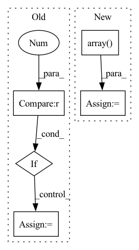

Pattern ID :34236
Before Change
_check_windowing_arguments(
start_offset_samples, stop_offset_samples,
window_size_samples, window_stride_samples)
if stop_offset_samples == 0 :
warnings.warn(
"Meaning of `trial_stop_offset_samples`=0 has changed, use `None` "
"to indicate end of trial/recording. Using `None`.")
stop_offset_samples = None
if start_offset_samples is not None or stop_offset_samples is not None:
warnings.warn("Usage of offset_sample args in create_fixed_length_windows is deprecated and"After Change
drop_last_window)
// check if recordings are of different lengths
lengths = np.array( [ds.raw.n_times - ds.raw.first_samp for ds in concat_ds.datasets])
if (np.diff(lengths) != 0).any():
warnings.warn("Recordings have different lengths, they will not be batch-able!")
list_of_windows_ds = Parallel(n_jobs=n_jobs)(In pattern: SUPERPATTERN
Frequency: 6
Non-data size: 5
Instances Fragment ID: 98192122
Project Name: braindecode/braindecode
Commit Name: d47991998e0a0687e73c12d89d61d45f5be26ecc
Time: 2021-06-25
Author: dan.c.wil@gmail.com
File Name: braindecode/preprocessing/windowers.py
M Class Name: AnonimousClass
N Class Name: AnonimousClass
M Method Name: create_fixed_length_windows(14)
N Method Name: create_fixed_length_windows(14)
M Parent Class:
N Parent Class:
M File Name: braindecode/preprocessing/windowers.py
N File Name: braindecode/preprocessing/windowers.py
M Start Line: 122
M End Line: 181
N Start Line: 123
N End Line: 183
Before Change
img = torch.from_numpy(img).to(self.device)
img = img.float() // uint8 to fp16/32
img /= 255.0 // 0 - 255 to 0.0 - 1.0
if img.ndimension() == 3 :
img = img.unsqueeze(0)
return img
def _postprocess(self, img, origimg, pred, conf_thres, iou_thres, height, width):After Change
imgsz = check_img_size(max(img.shape[:2]), s=self.detector.stride.max()) // check img_size
img = letterbox(img, new_shape=imgsz)[0]
pp_imgs.append(img)
pp_imgs = np.array( pp_imgs)
pp_imgs = pp_imgs.transpose(0, 3, 1, 2)
pp_imgs = torch.from_numpy(pp_imgs).to(self.device)
pp_imgs = pp_imgs.float() // uint8 to fp16/32
pp_imgs /= 255.0 // 0 - 255 to 0.0 - 1.0
return pp_imgs
Fragment ID: 98192120
Project Name: elyha7/yoloface
Commit Name: 794e25df420f25fd7937e0af41fefd7bf184fad6
Time: 2022-01-10
Author: artemrebrikov@gmail.com
File Name: face_detector.py
M Class Name: YoloDetector
N Class Name: YoloDetector
M Method Name: _preprocess(2)
N Method Name: _preprocess(2)
M Parent Class:
N Parent Class:
M File Name: face_detector.py
N File Name: face_detector.py
M Start Line: 67
M End Line: 83
N Start Line: 66
N End Line: 82
Before Change
if h > 0 and w > 0:
angle = np.degrees(np.arctan2(delta[1], delta[0]))
if angle >= 90 :
angle -= 180
radius = gaussian_radius((np.ceil(h), np.ceil(w)))
radius = max(0, int(radius))After Change
box["rbbox"] = np.array(
[cv_ct[0], cv_ct[1], cv_wh[0], cv_wh[1], cv_angle])
cx, cy, w, h, angle = get_annotation_with_angle(box)
ct = np.array( (cx, cy))
cls_id = int(self.cat_mapping[ann["category_id"]])
if h > 0 and w > 0: Fragment ID: 98192111
Project Name: scheckmedia/centernet-uda
Commit Name: fc74afb36733ef7201421748c4dc4e1a35f939ee
Time: 2020-10-03
Author: tobias.scheck@etit.tu-chemnitz.de
File Name: datasets/coco.py
M Class Name: Dataset
N Class Name: Dataset
M Method Name: __get_rotated_coco(4)
N Method Name: __get_rotated_coco(4)
M Parent Class: data.Dataset
N Parent Class: data.Dataset
M File Name: datasets/coco.py
N File Name: datasets/coco.py
M Start Line: 231
M End Line: 253
N Start Line: 229
N End Line: 247
Before Change
crop_shape = [br[1] - ul[1], br[0] - ul[0]]
new_shape = [br[1] - ul[1], br[0] - ul[0]]
if len(img.shape) > 2 :
new_shape += [img.shape[2]]
new_img = np.zeros(orig_shape, dtype=np.uint8)
// Range to fill new array
new_x = max(0, -ul[0]), min(br[0], orig_shape[1]) - ul[0]After Change
old_x = max(0, ul[0]), min(orig_shape[1], br[0])
old_y = max(0, ul[1]), min(orig_shape[0], br[1])
img = np.array( Image.fromarray(img.astype(np.uint8)).resize(crop_shape))
new_img[old_y[0]:old_y[1], old_x[0]:old_x[1]] = img[new_y[0]:new_y[1], new_x[0]:new_x[1]]
return new_img Fragment ID: 98192114
Project Name: yuliangxiu/icon
Commit Name: 0198e25265de836a9b0c79b017afa7fb5edcb56a
Time: 2022-02-13
Author: yuliang.xiu@tuebingen.mpg.de
File Name: lib/pymaf/utils/imutils.py
M Class Name: AnonimousClass
N Class Name: AnonimousClass
M Method Name: uncrop(4)
N Method Name: uncrop(6)
M Parent Class:
N Parent Class:
M File Name: lib/pymaf/utils/imutils.py
N File Name: lib/pymaf/utils/imutils.py
M Start Line: 239
M End Line: 262
N Start Line: 201
N End Line: 212
Before Change
def __call__(self, image, resize_method="bilinear", resize_antialias=False, input_shape=None):
input_shape = self.input_shape if input_shape is None else input_shape[:2]
image = tf.convert_to_tensor(image)
if tf.reduce_max(image) < 2 :
image *= 255
image = tf.image.resize(image, input_shape, method=resize_method, antialias=resize_antialias)
if len(image.shape) == 3:
image = tf.expand_dims(image, 0)After Change
if input_shape is not None:
self.set_input_shape(input_shape)
images = [image] if len(np.shape(image)) == 3 else image
images = [np.array( Image.fromarray(image).resize(self.input_shape)) for image in images]
images = (np.stack(images) - self.mean) / self.std
images = images if backend.image_data_format() == "channels_last" else images.transpose([0, 3, 1, 2])
return functional.convert_to_tensor(images) Fragment ID: 98192112
Project Name: leondgarse/keras_cv_attention_models
Commit Name: 2f70b0d51c8f2b1f8664f32dc75ecc1001758946
Time: 2023-01-29
Author: leondgarse@gmail.com
File Name: keras_cv_attention_models/common_layers.py
M Class Name: PreprocessInput
N Class Name: PreprocessInput
M Method Name: __call__(5)
N Method Name: __call__(5)
M Parent Class:
N Parent Class:
M File Name: keras_cv_attention_models/common_layers.py
N File Name: keras_cv_attention_models/common_layers.py
M Start Line: 586
M End Line: 601
N Start Line: 609
N End Line: 616
Before Change
// return df
inputs = [lags]
input_names = ["lags"]
if n_trend == 1 :
inputs += [time]
input_names += ["trend"]
elif n_trend > 1:
raise NotImplementedErrorAfter Change
// time is the time at each forecast step
t = df.loc[:, "t"].values
time = np.array( [t[n_lags+i: n_lags+i+n_forecasts] for i in range(n_samples)])
// if time were to be the present time at forecasting
// time = df.loc[:, "t"].iloc[n_lags-1:-n_forecasts].values
// time = np.expand_dims(time, axis=1) Fragment ID: 98192118
Project Name: ourownstory/neural_prophet
Commit Name: 384f1803a758d07de17db9631d9941c4d7a65de3
Time: 2020-05-19
Author: oskar.triebe@merantix.com
File Name: code/make_dataset.py
M Class Name: AnonimousClass
N Class Name: AnonimousClass
M Method Name: tabularize_univariate_datetime(4)
N Method Name: tabularize_univariate_datetime(5)
M Parent Class:
N Parent Class:
M File Name: code/make_dataset.py
N File Name: code/make_dataset.py
M Start Line: 125
M End Line: 176
N Start Line: 152
N End Line: 184